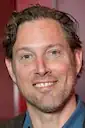
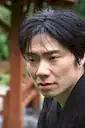

Reparto
Personajes principales

|
Marius Ahrendt |
Interpreta a Juri (de joven) durante su época universitaria en la
DDR, donde una vez caído el muro, logra acceder a un ordenador de
SGI en la parte oeste, y observa una animación terráquea en el
ordenador, de donde le parte la idea de empezar con TerraVision.
|

|
Mišel Matičević |
Interpreta a Juri de mayor, donde ya ha renunciado a su proyecto
tras pasar por la quiebra de la sociedad y de muestra como un
personaje rendido que no quiere dedicarse ya al software.
|
|
|
Mark Waschke |
Interpreta al socio de Juri, viene del mundo de las artes, donde
busca ayuda de un programador para poder desarrollar sus proyectos
de artes (sobre la visión del mundo) en la informática.
|
|
|
Leonard Scheicher |
Ya de mayor, representa la parte de la sociedad que sigue viva, y
toma las riendas en el juicio contra Google por el robo de Google
Earth.
|

|
Lukas Loughran |
Ingeniero y propietario de Sillicon Graphics Inc. (SGI) quien roba
a Juri los programas informáticos relacionados con TerraVisión.
|
|
|
Lavinia Wilson |
Representa a la misma abogada del juicio de Apple contra Samsung,
ella lucha porque se reconozca que Google Earth fue un plagio de
Art.com (la empresa de Juri y Carsten)
|
Personajes secundarios

|
Seumas Sargent |
|
|
Lukas Loughran |

|
Michelle Glick |

|
Johanna Polley |
|

|
Clayton Nemrow |
 |
Dan Cade |

|
Björn Freiberg |

|
Christoph Tomanek |
|

|
Yuki Iwamoto |